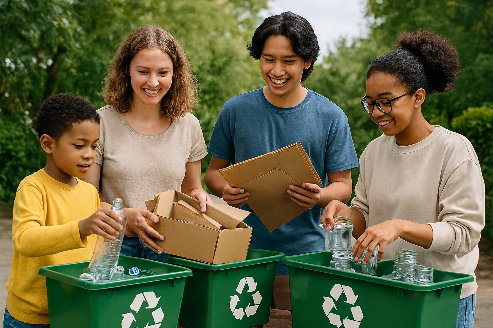

Misión
Nuestra misión es ayudar a contribuir con el planeta.
 Eco-recicla Comunal
Eco-recicla Comunal
Unidos para reciclar, cuidar el medio ambiente y mejorar la calidad de vida de la comunidad.
Nuestra misión es ayudar a contribuir con el planeta.
Nuestra visión es que para el año 2030 ser una organización expandida a más áreas de Colombia.
Ayudar al medio ambiente y mejorar la calidad de vida de los habitantes.
La actividad principal de esta organización es la venta de recursos reciclables incentivando a la comunidad a aportar en el reciclaje a cambio del valor correspondiente.
Entre las actividades complementarias está el aporte a la comunidad en materia de desechos, limpieza y calidad de vida. También realizamos campañas para incentivar la importancia del reciclaje y de una buena conducta con los desechos renovables y no renovables.
ecoreciclacomunal@gmail.com
312 311 4120
Calle 45h #20h-30